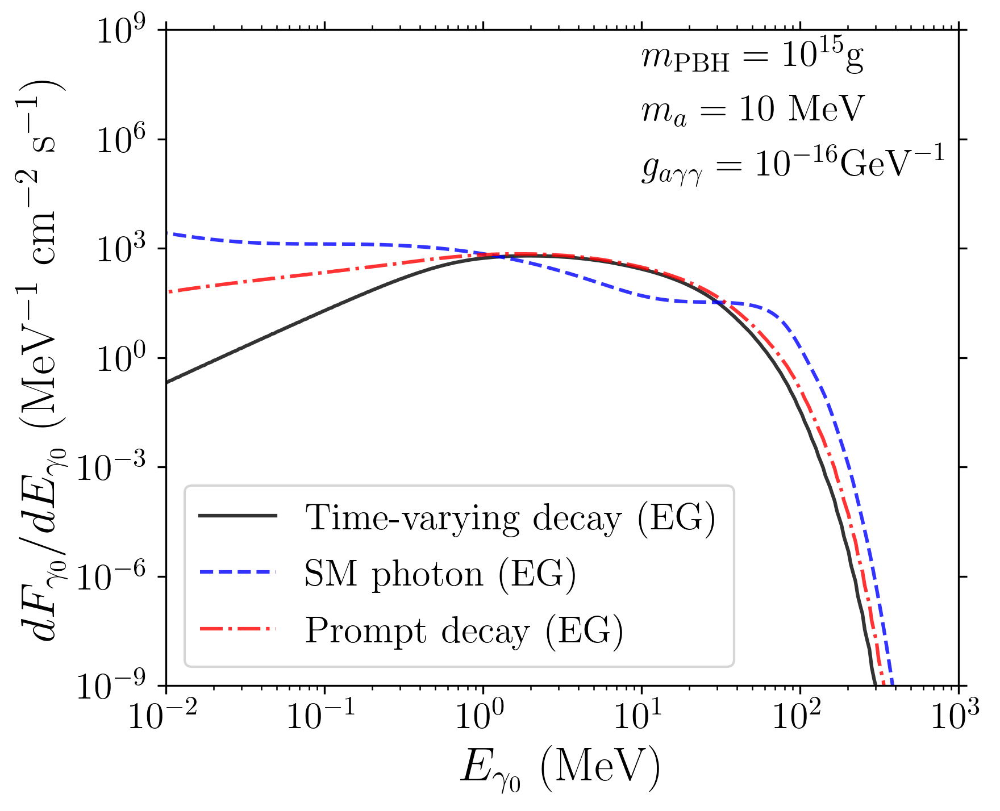
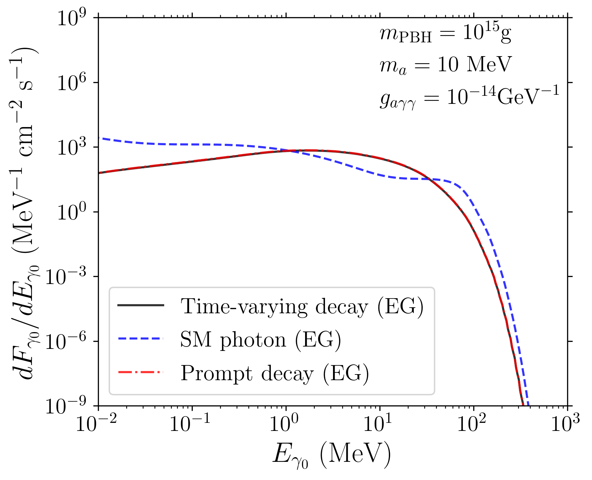
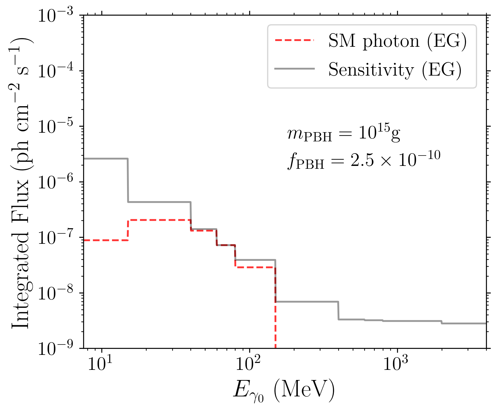
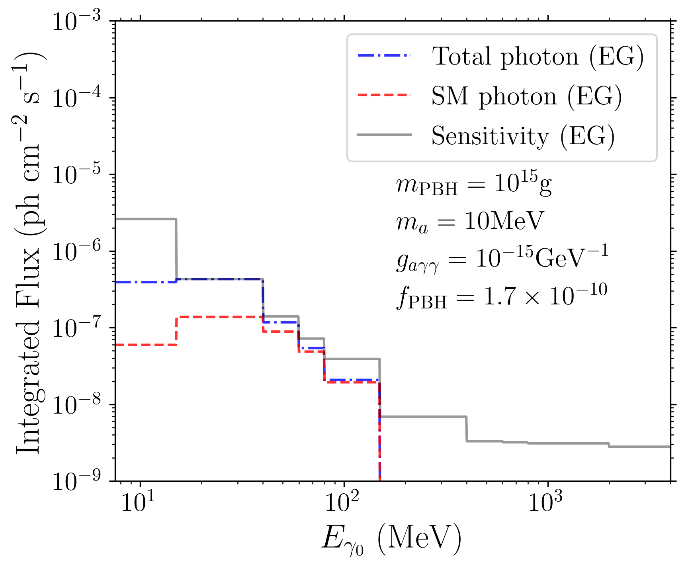
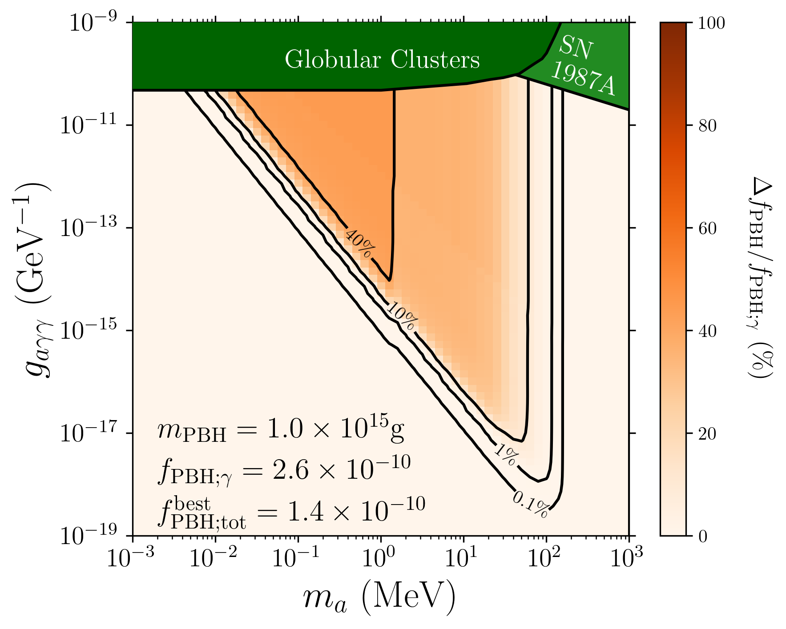
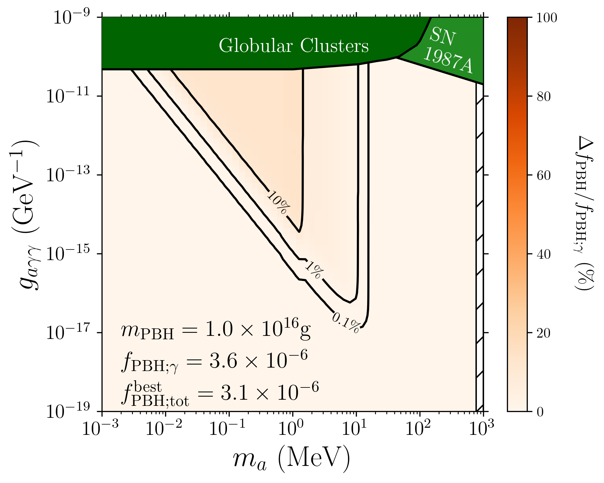

layout: true <div class="my-header"> <p class="align_left"><img src="images/yonsei_logo.png" style="height: 30px;"/></p> <p class="align_right"><b>Constraining ALPs via PBH</b></p> </div> <div class="my-footer"> <p class="align_right"><b>2022.10.21 KPS</b></p> <p class="align_left"><b>Tae-Geun Kim</b></p> </div> --- class: center, middle # Constraining ALPs via PBH <h3 style="color:black">with time-varying decay process</h3> <h4 style="color:darkblue">Part. 2</h4> <br/> <h3 style="color: black">Tae-Geun Kim</h3> <h4 style="color: darkblue">Yonsei University</h4> <br/> <h4 style="color: black">with Yongsoo Jho, Jongchul Park, Seongchan Park, Yeji Park</h4> <h4 style="color:darkblue">arXiv: 2211.XXXXX</h4> ??? 안녕하세요. 저는 연세대학교 박성찬 교수님 연구실의 김태근입니다. 제가 발표할 것은 앞선 박예지 학생에 이어 PBH를 이용한 ALP에 새로운 제약을 주는 방법입니다. 이번 발표에서는 Prompt decay가 아닌 lifetime을 가진 ALP를 다룰 것이며 이를 time-varying decay라는 새로운 방법론으로 다루고자 합니다. 이 연구는 조용수 박사님, 박종철, 박성찬 교수님 그리고 박예지 학생과 함께하였습니다. --- class: split-50 ### Motivation for time-varying decay .middle-column[ $$ \small \text{ALP's mean lifetime : } \gamma\tau\_a = \frac{64\pi E\_a}{g\_a^2 m\_a^4} \equiv \frac{\gamma}{\Gamma_a} $$ ] .left-column[ .center[ <img src="images/02_tau.png" alt="simple" style="width:90%"> <figcaption style="text-align: center;font-size:0.7em;"><b>Fig.1</b> Mean lifetime of ALPs in the rest frame</figcaption> ] ] .right-column[ .center[ <img src="images/01_tau_cmb.png" alt="01_tau_cmb" style="width:90%"> <figcaption style="text-align: center;font-size:0.7em;"><b>Fig.2</b> Mean lifetime of ALPs from CMB (Boosted + Redshifted)</figcaption> ] ] .middle-column[ $$ \small \therefore\,\text{ALP's mean lifetime : } \tau\_a^t \equiv \gamma(t) \tau\_a = \frac{64\pi E\_a(t)}{g\_a^2 m\_a^4} \equiv \frac{1}{\Gamma_a^t} $$ ] ??? ALP의 mean lifetime은 ALP의 mass와 광자와의 coupling constant, 그리고 ALP의 total energy로 정의됩니다. ALP의 mean lifetime이 짧은 경우에는 이는 거의 상수로 여겨질 수 있지만, ALP의 mean lifetime이 충분히 긴 경우에는 energy의 redshift효과가 커져서 lifetime에 변화를 줄 수 있습니다. 왼쪽 그림은 저희 연구에서 집중한 영역에서의 non-relativistic mean lifetime을 표현한 것인데, 절반 가량의 영역이 우주나이와 비슷하거나 더 크다는 것을 볼 수 있습니다. 이런 scale에서는 ALP의 mean lifetime은 더 이상 상수가 아니라 time dependent variable로 고려해야 할 것입니다. 우측 그림은 time dependence를 고려한 10MeV 질량의 ALP 입자들의 에너지별 mean lifetime입니다. 이 그림에서는 CMB time에 생성된 ALP들이 현재 우주까지 날아오면서 redshift에 의해 lifetime이 바뀌는 것을 볼 수 있는데, 이 차이가 꽤 크다는 것을 알 수 있습니다. --- ### Decay equation * **Time-varying decay equation** $$ \small \frac{\text{d}N\_a}{dt} = -\Gamma\_a^t N\_a ~\Rightarrow~N\_a(t) = N\_a(t\_e)\exp\left(-\int\_{t\_e}^t \Gamma\_a^{t'-t\_e} \,\text{d}t'\right) $$ <br/> * **Time-varying decay in terms of Survival analysis** <span style="font-size:0.5em; color: rgb(78, 77, 77);float:right">[D. G. Kleinbaum (1996) Survival analysis: A self learning text. New York: Springer]</span> Survival analysis | Expression | Time-varying decay | Notation :---------------: | :--------: | :----------------: | :--------: Survival function | $S(t) = \mathbb{P}[X > t]$ | Survival probability | $P_\text{surv}$ Hazard function | $\displaystyle h(t) = -\frac{\text{d}}{\text{d}t}[\log S(t)]$ | Decay rate | $\Gamma_a^t$ Failure density function | $\displaystyle \int\_0^t f(u)du = 1-S(t)$ | Decay density function | $\mathcal{P}_\text{decay}$ ??? 우리는 particle들이 한 순간에 얼마나 decay하는 지를 알아내기 위하여 decay equation을 사용합니다. 이는 아주 통상적인 방법이지만, decay rate이 time dependent하다는 것을 고려하면 양상이 달라집니다. 이것의 해는 단순한 exponential decay가 아니라 decay rate을 시간에 대해 적분한 값이 exponential에 들어있는 꼴로 나타납니다. 이 해를 분석하기 위하여 우리는 생명통계학의 한 분야인 survival analysis를 사용하여 표현할 수 있습니다. 이를 이용하여 기존에 자주 사용되던 Survival probability와 decay rate을 time-varying decay에서 잘 정의할 수 있을 뿐더러 확률분포함수인 Decay density function을 새로 도입하여 향후 계산에 사용할 수 있습니다. --- class: split-50 ### Decay number density * **Survival probability & Decay density function** $$ \begin{aligned} \small P\_\text{surv} (t;t\_e,E\_a) &= \small \exp \left(-\int\_{t\_e}^t \Gamma\_a^{t'-t\_e}\,\text{d}t'\right)\\\\ \small \mathcal{P}\_\text{decay}(t;t\_e,E\_a) &= \small P\_\text{surv}(t;t\_e,E\_a) \times \Gamma\_a^{t-t\_e} \end{aligned} $$ * **Differential number density for decaying ALPs** <span style="font-size:0.7em;float:right;color:gray">$\small \mathcal{Z} = \left(\dfrac{1+z(t)}{1+z(t_e)}\right)^3$</span> .left-column[ <div id="boxshadow" style="width:90%;margin:0 auto;font-size:0.9em;"> <b>From $\small (t_e, E_a)$ to $\small t$ :</b> $$ \small \phi_a(t;t_e,E_a) \,=\, \frac{\text{d}n_a}{\text{d}t_e}\times \mathcal{P}_\text{decay}(t;t_e,E_a) \times \mathcal{Z} $$ </div> ] .right-column[ <div id="boxshadow" style="width:90%;margin:0 auto;font-size:0.9em;"> <b>From $\small t\_e$ to $\small (t,\widetilde{E}\_a)$ :</b> $$ \small \phi\_a(t,\widetilde{E}\_a;t\_e) = \phi(t;t\_e,E\_a) \Big{|}\_{E\_a = \mathcal{R}^{-1}\_{t\to t\_e}(\widetilde{E}\_a)} $$ </div> ] <hr style="height:2em; visibility:hidden;" /> .middle-column[ $$ \small \therefore\,\text{At $(t, E\_a)$ :}\quad \frac{\text{d}n\_a^{\text{dec}}}{\text{d}t} = \int\_{t\_e^\text{min}}^t \phi\_a (t,E\_a;t\_e)\text{d}t\_e $$ ] ??? 앞의 방정식과 표를 이용하여 Survival probability와 Decay density function을 구한 결과는 처음 식과 같습니다. Survival probability가 의미하는 것은 t_e시점에 에너지 E_a로 발생한 입자가 t 시점에서 살아있을 확률을 의미하고, Decay density function은 t_e 시점에 E_a로 발생한 입자가 t 시점에 순간적으로 decay하는 비율을 의미합니다. 이를 활용하여 발생시점때의 에너지를 지정했을 때 입자의 시간 t에서의 decay number density를 구할 수 있으며 반대로 decay 시점때의 에너지를 지정했을 때 입자의 decay number density도 구할 수 있습니다. 이렇게 얻어진 결과들을 redshift 를 적용하여 적분하면 결국 PBH가 꾸준히 만들어낸 ALP들의 시간 t에서의 decay number density를 다음과 같이 구할 수 있습니다. --- class: split-50 ### Recap of Part.1 - Boost, Redshift .left-column[ .center[ <img src="images/04_decay_spectrum.png" alt="decay spectrum" style="width:100%"> <figcaption style="text-align:center;font-size:0.8em;"><b>Fig.3 Boosted photon spectrum</b> </figcaption> ] ] .right-column[ * **Boosted photon flux** <span style="font-size:0.5em; color: rgb(78, 77, 77);float:right">[K. Agashe, R. Franceschini, and D. Kim, Phys. Rev. D 88, 057701 (2013)]</span> $$ \small \left\\{\left(E\_a,\frac{1}{E\_a}\frac{\text{d}n\_a^\text{dec}}{\text{d}t}\right)\right\\}\overset{\text{Boost}}{\longrightarrow} \left\\{\left(E\_\gamma,\frac{1}{E\_\gamma}\frac{\text{d}n\_\gamma}{\text{d}t}\right)\right\\} $$ * **Integration of redshifted photon flux** <span style="font-size:0.5em; color: rgb(78, 77, 77);float:right">[B. J. Carr, K. Kohri, Y. Sendouda, and J. Yokoyama, Phys. Rev. D 81, 104019 (2010)]</span> $$ \small \frac{\text{d}F\_{\gamma\_0}}{\text{d}E\_{\gamma\_0}} = \int\_{t\_\text{CMB}}^{t\_0} \frac{\text{d}t}{(1+z(t))^3 E\_{\gamma\_0}} \frac{\text{d}n\_\gamma}{\text{d}t}\Big{|}\_{E\_\gamma=(1+z(t))E\_{\gamma\_0}} $$ ] ??? 이렇게 구해진 decay number density는 앞선 발표에서 다뤘듯이 Boost효과를 고려하여 photon spectrum으로 변환해야합니다. 그렇게 변환된 photon을 redshift 효과를 고려하여 적분하면 저희가 구하고자 했던 differential flux를 구할 수 있습니다. --- ### Summary of time-varying decay .center[ <img src="images/deck.png" alt="" style="width:100%"> ] $$\tiny \displaystyle \text{where } \mathcal{Z} = \left(\frac{1+z(t)}{1+z(t_e)}\right)^3$$ ??? 다음은 Time-varying decay의 전체 흐름을 정리한 그림입니다. PBH가 시간 t_e에서 ALP를 방출하고 방출된 ALP는 decay와 redshift 효과로 인하여 줄어들게 됩니다. 이윽고 시간 t에서 ALP가 얼마나 decay하는 지를 계산하고 이에 boost 효과를 고려하여 photon spectrum을 구해냅니다. 마지막으로 해당 photon들이 현재까지 날아오면서 겪은 redshift를 반영해주면 최종적으로 differential flux를 얻을 수 있습니다. --- class: split-50 ### Difference with prompt decay .left-column[ .center[  <figcaption style="text-align:center;font-size:0.8em;";><b>Fig.4 Differential flux for $g\_a=10^{-16}\text{GeV}^{-1}$</b> </figcaption> ] ] .right-column[ .center[  <figcaption style="text-align:center;font-size:0.8em;";><b>Fig.5 Differential flux for $g\_a=10^{-14}\text{GeV}^{-1}$</b> </figcaption> ] ] ??? 이렇게 나온 결과를 앞선 발표의 Prompt decay와 비교해보면 이와 같습니다. 작은 coupling constant에 대해서는 lifetime이 길어지므로 prompt decay 보다는 낮은 flux를 보여주고, coupling constant가 일정 값을 넘어가면 lifetime이 충분히 짧아져서 prompt decay와 정확히 같은 결과를 보여줍니다. --- class: split-50 ### Recap with Part.1 - $\small f\_\text{PBH}$ .left-column[ .center[  <figcaption style="text-align:center;font-size:0.8em;";><b>Fig.6 $f\_\text{PBH}$ for SM photon only</b> </figcaption> ] ] .right-column[ .center[  <figcaption style="text-align:center;font-size:0.8em;";><b>Fig.7 $f\_\text{PBH}$ for total photon</b> </figcaption> ] ] ??? 앞서 박예지 학생이 발표했던 것과 같이 이렇게 얻어진 flux를 e-ASTROGAM의 sensitivity와 비교하여 f_PBH 값을 얻어냅니다. --- class: split-50 .left-column[ ### Results & Summary .center[  <figcaption style="text-align:center;font-size:0.8em;";><b>Fig.8 New constraint for ALPs ($m\_\text{PBH}=10^{15}\text{g}$)</b> </figcaption> ] ] .right-column[ <hr style="height:0.5em; visibility:hidden;" /> <span style="font-size:0.6em; color: rgb(78, 77, 77); float:right"><b>GC</b>: M. J. Dolan, F. J. Hiskens, and R. R. Volkas, [arXiv:2207.03102] (2022)</span> <span style="font-size:0.6em; color: rgb(78, 77, 77); float:right"><b>SN1987A</b>: J. Jaeckel, P. C. Malta, and J. Redondo, Phys. Rev. D 98, 055032 (2018)</span> <hr style="height:2.5em; visibility:hidden;" /> <!--1em for print --> <!--2.5em for display --> .center[  <figcaption style="text-align:center;font-size:0.8em;"><b>Fig.9 New constraint for ALPs ($m_\text{PBH}=10^{16}\text{g}$)</b></figcaption> ] ] <hr style="height:0.2em; visibility:hidden;" /> <hr/> 1️⃣ When consider ALPs decay, we should consider **boost effect** to photon. 2️⃣ If a particle has a very long lifetime, we should consider **time-varying decay**. ☑️ Using PBH as a source of ALPs, we can give a new constraint on ALPs. ??? 다음 결과들은 ALP가 없을 때의 f_pbh와 있을 때의 f_pbh를 ALP의 질량 - coupling constant 평면 위에서 비교한 것입니다. 구분된 영역들 중에서 저희는 최소 차이가 1% 이상은 되어야 e-ASTROGAM에서 해당 차이를 구분할 수 있다고 걸론 내렸으며 그렇게 얻어진 영역들을 기존의 astrophysical object들에서 얻어진 constraint와 비교해보았습니다. 그 결과 기존의 bound보다 확실히 개선된 결과를 보여주는 것을 볼 수 있었습니다. 저희 연구에서 강조할 점은 다음 3가지입니다. 첫째는 앞서 박예지 학생의 발표에서 다뤘던 photon의 boost effect를 ALP에도 반영했다는 점 입니다. 둘째는 ALP decay를 정확히 계산하기 위해서 time-varying decay를 제안한 점 입니다. 이 두 가지 방법론은 비단 ALP 뿐만 아니라 많은 Cosmological decay에 적용될 수 있습니다. 마지막으로 얻은 결과는 PBH를 ALP의 source로 사용하였더니 ALP에 대해 새로운 constraint을 얻을 수 있음을 보여주었습니다. 제 발표는 여기까지 입니다. 감사합니다.